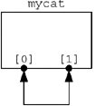
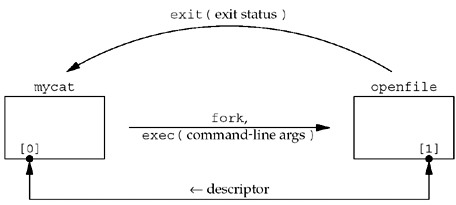

| [ Team LiB ] |
|
15.7 Passing DescriptorsWhen we think of passing an open descriptor from one process to another, we normally think of either
In the first example, the process opens a descriptor, calls fork, and then the parent closes the descriptor, letting the child handle the descriptor. This passes an open descriptor from the parent to the child. But, we would also like the ability for the child to open a descriptor and pass it back to the parent. Current Unix systems provide a way to pass any open descriptor from one process to any other process. That is, there is no need for the processes to be related, such as a parent and its child. The technique requires us to first establish a Unix domain socket between the two processes and then use sendmsg to send a special message across the Unix domain socket. This message is handled specially by the kernel, passing the open descriptor from the sender to the receiver.
The steps involved in passing a descriptor between two processes are then as follows:
The client and server must have some application protocol so that the receiver of the descriptor knows when to expect it. If the receiver calls recvmsg without allocating room to receive the descriptor, and a descriptor was passed and is ready to be read, the descriptor that was being passed is closed (p. 518 of TCPv2). Also, the MSG_PEEK flag should be avoided with recvmsg if a descriptor is expected, as the result is unpredictable. Descriptor Passing ExampleWe now provide an example of descriptor passing. We will write a program named mycat that takes a pathname as a command-line argument, opens the file, and copies it to standard output. But instead of calling the normal Unix open function, we call our own function named my_open. This function creates a stream pipe and calls fork and exec to initiate another program that opens the desired file. This program must then pass the open descriptor back to the parent across the stream pipe. Figure 15.7 shows the first step: our mycat program after creating a stream pipe by calling socketpair. We designate the two descriptors returned by socketpair as [0] and [1]. Figure 15.7. mycat program after creating stream pipe using socketpair. The process then calls fork and the child calls exec to execute the openfile program. The parent closes the [1] descriptor and the child closes the [0] descriptor. (There is no difference in either end of the stream pipe; the child could close [1] and the parent could close [0].) This gives us the arrangement shown in Figure 15.8. Figure 15.8. mycat program after invoking openfile program. The parent must pass three pieces of information to the openfile program: (i) the pathname of the file to open, (ii) the open mode (read-only, read–write, or write-only), and (iii) the descriptor number corresponding to its end of the stream pipe (what we show as [1]). We choose to pass these three items as command-line arguments in the call to exec. An alternative method is to send these three items as data across the stream pipe. The openfile program sends back the open descriptor across the stream pipe and terminates. The exit status of the program tells the parent whether the file could be opened, and if not, what type of error occurred. The advantage in executing another program to open the file is that the program could be a "set-user-ID" binary, which executes with root privileges, allowing it to open files that we normally do not have permission to open. This program could extend the concept of normal Unix permissions (user, group, and other) to any form of access checking it desires. We begin with the mycat program, shown in Figure 15.9. Figure 15.9 mycat program: copies a file to standard output.unixdomain/mycat.c
1 #include "unp.h"
2 int my_open(const char *, int);
3 int
4 main(int argc, char **argv)
5 {
6 int fd, n;
7 char buff[BUFFSIZE];
8 if (argc != 2)
9 err_quit("usage: mycat <pathname>");
10 if ( (fd = my_open(argv[1], O_RDONLY)) < 0)
11 err_sys("cannot open %s", argv[1]);
12 while ( (n = Read(fd, buff, BUFFSIZE)) > 0)
13 Write(STDOUT_FILENO, buff, n);
14 exit(0);
15 }
If we replace the call to my_open with a call to open, this simple program just copies a file to standard output. The function my_open, shown in Figure 15.10, is intended to look like the normal Unix open function to its caller. It takes two arguments, a pathname and an open mode (such as O_RDONLY to mean read-only), opens the file, and returns a descriptor. Create stream pipe8 socketpair creates a stream pipe. Two descriptors are returned: sockfd[0] and sockfd[1]. This is the state we show in Figure 15.7. fork and exec9–16 fork is called, and the child then closes one end of the stream pipe. The descriptor number of the other end of the stream pipe is formatted into the argsockfd array and the open mode is formatted into the argmode array. We call snprintf because the arguments to exec must be character strings. The openfile program is executed. The execl function should not return unless it encounters an error. On success, the main function of the openfile program starts executing. Parent waits for child17–22 The parent closes the other end of the stream pipe and calls waitpid to wait for the child to terminate. The termination status of the child is returned in the variable status, and we first verify that the program terminated normally (i.e., it was not terminated by a signal). The WEXITSTATUS macro then converts the termination status into the exit status, whose value will be between 0 and 255. We will see shortly that if the openfile program encounters an error opening the requested file, it terminates with the corresponding errno value as its exit status. Figure 15.10 my_open function: opens a file and returns a descriptor.unixdomain/myopen.c
1 #include "unp.h"
2 int
3 my_open(const char *pathname, int mode)
4 {
5 int fd, sockfd[2], status;
6 pid_t childpid;
7 char c, argsockfd[10], argmode[10];
8 Socketpair(AF_LOCAL, SOCK_STREAM, 0, sockfd);
9 if ( (childpid = Fork()) == 0) { /* child process */
10 Close(sockfd[0]);
11 snprintf(argsockfd, sizeof(argsockfd), "%d", sockfd[1]);
12 snprintf(argmode, sizeof(argmode), "%d", mode);
13 execl("./openfile", "openfile", argsockfd, pathname, argmode,
14 (char *) NULL);
15 err_sys("execl error");
16 }
17 /* parent process - wait for the child to terminate */
18 Close(sockfd[1]); /* close the end we don't use */
19 Waitpid(childpid, &status, 0);
20 if (WIFEXITED(status) == 0)
21 err_quit("child did not terminate");
22 if ( (status = WEXITSTATUS(status)) == 0)
23 Read_fd(sockfd[0], &c, 1, &fd);
24 else {
25 errno = status; /* set errno value from child's status */
26 fd = -1;
27 }
28 Close(sockfd[0]);
29 return (fd);
30 }
Receive descriptor23 Our function read_fd, shown next, receives the descriptor on the stream pipe. In addition to the descriptor, we read one byte of data, but do nothing with it.
Figure 15.11 shows the read_fd function, which calls recvmsg to receive data and a descriptor on a Unix domain socket. The first three arguments to this function are the same as for the read function, with a fourth argument being a pointer to an integer that will contain the received descriptor on return. 9–26 This function must deal with two versions of recvmsg: those with the msg_control member and those with the msg_accrights member. Our config.h header (Figure D.2) defines the constant HAVE_MSGHDR_MSG_CONTROL if the msg_control version is supported. Make certain msg_control is suitably aligned10–13 The msg_control buffer must be suitably aligned for a cmsghdr structure. Simply allocating a char array is inadequate. Here we declare a union of a cmsghdr structure with the character array, which guarantees that the array is suitably aligned. Another technique is to call malloc, but that would require freeing the memory before the function returns. 27–45 recvmsg is called. If ancillary data is returned, the format is as shown in Figure 14.13. We verify that the length, level, and type are correct, then fetch the newly created descriptor and return it through the caller's recvfd pointer. CMSG_DATA returns the pointer to the cmsg_data member of the ancillary data object as an unsigned char pointer. We cast this to an int pointer and fetch the integer descriptor that is pointed to. Figure 15.11 read_fd function: receives data and a descriptor.lib/read_fd.c
1 #include "unp.h"
2 ssize_t
3 read_fd(int fd, void *ptr, size_t nbytes, int *recvfd)
4 {
5 struct msghdr msg;
6 struct iovec iov[1];
7 ssize_t n;
8 #ifdef HAVE_MSGHDR_MSG_CONTROL
9 union {
10 struct cmsghdr cm;
11 char control[CMSG_SPACE(sizeof (int))];
12 } control_un;
13 struct cmsghdr *cmptr;
14 msg.msg_control = control_un.control;
15 msg.msg_controllen = sizeof(control_un.control);
16 #else
17 int newfd;
18 msg.msg_accrights = (caddr_t) & newfd;
19 msg.msg_accrightslen = sizeof(int);
20 #endif
21 msg.msg_name = NULL;
22 msg.msg_namelen = 0;
23 iov[0].iov_base = ptr;
24 iov[0].iov_len = nbytes;
25 msg.msg_iov = iov;
26 msg.msg_iovlen = 1;
27 if ( (n = recvmsg(fd, &msg, 0)) <= 0)
28 return (n);
29 #ifdef HAVE_MSGHDR_MSG_CONTROL
30 if ( (cmptr = CMSG_FIRSTHDR(&msg)) != NULL &&
31 cmptr->cmsg_len == CMSG_LEN(sizeof(int))) {
32 if (cmptr->cmsg_level != SOL_SOCKET)
33 err_quit("control level != SOL_SOCKET");
34 if (cmptr->cmsg_type != SCM_RIGHTS)
35 err_quit("control type != SCM_RIGHTS");
36 *recvfd = *((int *) CMSG_DATA(cmptr));
37 } else
38 *recvfd = -1; /* descriptor was not passed */
39 #else
40 if (msg.msg_accrightslen == sizeof(int))
41 *recvfd = newfd;
42 else
43 *recvfd = -1; /* descriptor was not passed */
44 #endif
45 return (n);
46 }
If the older msg_accrights member is supported, the length should be the size of an integer and the newly created descriptor is returned through the caller's recvfd pointer. Figure 15.12 shows the openfile program. It takes the three command-line arguments that must be passed and calls the normal open function. Figure 15.12 openfile function: opens a file and passes back the descriptor.unixdomain/openfile.c
1 #include "unp.h"
2 int
3 main(int argc, char **argv)
4 {
5 int fd;
6 if (argc != 4)
7 err_quit("openfile <sockfd#> <filename> <mode>");
8 if ( (fd = open(argv[2], atoi(argv[3]))) < 0)
9 exit((errno > 0) ? errno : 255);
10 if (write_fd(atoi(argv[1]), "", 1, fd) < 0)
11 exit((errno > 0) ? errno : 255);
12 exit(0);
13 }
Command-line arguments7–12 Since two of the three command-line arguments were formatted into character strings by my_open, two are converted back into integers using atoi. open the file9–10 The file is opened by calling open. If an error is encountered, the errno value corresponding to the open error is returned as the exit status of the process. Pass back descriptor11–12 The descriptor is passed back by write_fd, which we show next. This process then terminates. But, recall that earlier in the chapter, we said that it was acceptable for the sending process to close the descriptor that was passed (which happens when we call exit), because the kernel knows that the descriptor is in flight, and keeps it open for the receiving process.
Figure 15.13 shows the final function, write_fd, which calls sendmsg to send a descriptor (and optional data, which we do not use) across a Unix domain socket. Figure 15.13 write_fd function: passes a descriptor by calling sendmsg.lib/write_fd.c
1 #include "unp.h"
2 ssize_t
3 write_fd(int fd, void *ptr, size_t nbytes, int sendfd)
4 {
5 struct msghdr msg;
6 struct iovec iov[1];
7 #ifdef HAVE_MSGHDR_MSG_CONTROL
8 union {
9 struct cmsghdr cm;
10 char control[CMSG_SPACE(sizeof(int))];
11 } control_un;
12 struct cmsghdr *cmptr;
13 msg.msg_control = control_un.control;
14 msg.msg_controllen = sizeof(control_un.control);
15 cmptr = CMSG_FIRSTHDR(&msg);
16 cmptr->cmsg_len = CMSG_LEN(sizeof(int));
17 cmptr->cmsg_level = SOL_SOCKET;
18 cmptr->cmsg_type = SCM_RIGHTS;
19 *((int *) CMSG_DATA(cmptr)) = sendfd;
20 #else
21 msg.msg_accrights = (caddr_t) & sendfd;
22 msg.msg_accrightslen = sizeof(int);
23 #endif
24 msg.msg_name = NULL;
25 msg.msg_namelen = 0;
26 iov[0].iov_base = ptr;
27 iov[0].iov_len = nbytes;
28 msg.msg_iov = iov;
29 msg.msg_iovlen = 1;
30 return (sendmsg(fd, &msg, 0));
31 }
As with read_fd, this function must deal with either ancillary data or older access rights. In either case, the msghdr structure is initialized and then sendmsg is called. We will show an example of descriptor passing in Section 28.7 that involves unrelated processes. Additionally, we will show an example in Section 30.9 that involves related processes. We will use the read_fd and write_fd functions we just described. |
| [ Team LiB ] |
|